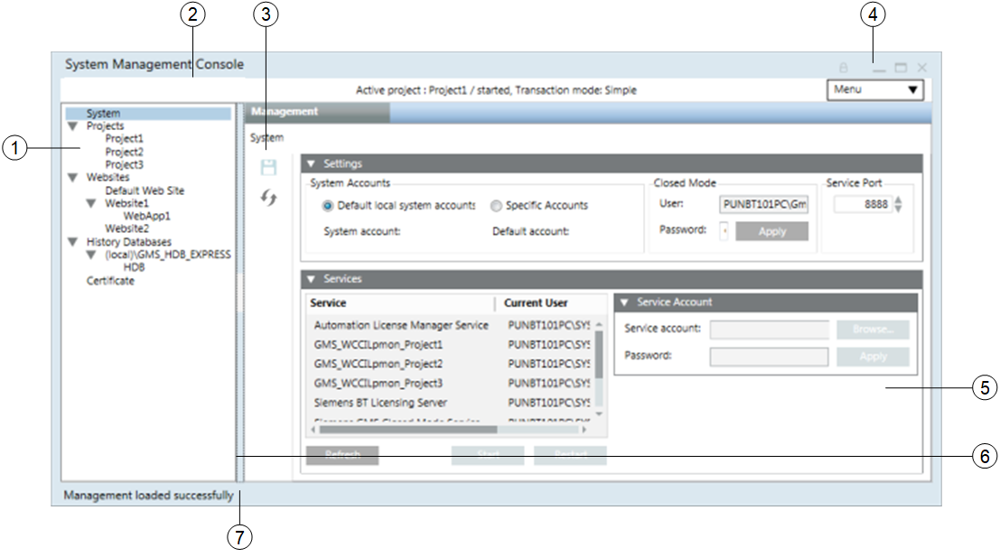

SMC User Interface Basics
When you install Desigo CC on a Server, Client, or FEP, a configuration and management tool called, System Management Console (SMC), is installed on that computer.
You can start SMC by clicking the desktop shortcut  created with the installation or by clicking SMC in Start Windows (by typing SMC in Search Windows). For more information, see Starting the System Management Console.
created with the installation or by clicking SMC in Start Windows (by typing SMC in Search Windows). For more information, see Starting the System Management Console.
The SMC enables the project engineer to perform project, history database, WindowsApp client configuration and their user configuration tasks.
SMC also facilitates you to create and configure the security certificates for securing the communication between client and server, server and remote web server and the communication between the distributed systems.

NOTE:
After a successful Server, Client, or FEP installation, ensure that you set the Change User Account Control settings (UAC settings) to Default in order to:
- restrict launching SMC by a non-admin Windows user. You must always launch SMC with a Windows user having administrative rights.
- to launch the Desigo CC Client application.
For more information, see Return User Account Control Settings to Default or Always Notify.
SMC Tasks
Following are the tasks that can be performed on a Server, Client, or FEP installations using SMC. The specific SMC tasks depend on the type of installation.
SMC Objects in SMC tree | Tasks | Server Station | Installed Client/FEP Station | Remarks |
Configure System account | Yes | Yes |
| |
Configure Closed mode user account | Yes | Yes |
| |
Configure Service Admin account | Yes | No | You can do this using the Service Admin expander that displays only when you edit the StartSmc.bat file by adding the /support switch. | |
Configure Service account | Yes | Yes |
| |
Import Windows Key file | Yes | Yes (only on FEP) |
| |
Export Windows Key file | Yes | No |
| |
Create project from project template/Restore project | Yes | No |
| |
Upgrade project | Yes | Yes |
| |
Create project | Yes | Yes | On Client or Server, you can create a project in Automatic and Manual configuration mode. | |
Add an extension to a project | Yes | No |
| |
Activate project | Yes | Yes |
| |
Start and stop project | Yes | Yes |
| |
Edit and save | Yes | Yes | On a Client or Server, you can modify the project in Automatic and Manual mode. | |
Change System Info | Yes | No |
| |
Change Distribution Info | Yes | No |
| |
Check Project share consistency | Yes | No |
| |
Check Distribution consistency | Yes | No |
| |
Clear name cache | Yes | Yes |
| |
Clear HD2 Files | Yes | No |
| |
Delete project | Yes | Yes |
| |
Remove events | Yes | No |
| |
Align project with server | No | Yes | If you change the Server project settings, such as the proxyport or a language, then you must align all the client and FEP projects linked to the server project. | |
Encrypt project backup | Yes | Yes |
| |
Decrypt project backup | Yes | Yes |
| |
Create website | Yes | Yes |
| |
Start and stop website | Yes | Yes |
| |
Edit and save website | Yes | Yes |
| |
Delete website | Yes | Yes |
| |
Upgrade website | Yes | Yes |
| |
Create web application | Yes | Yes |
| |
Edit and save web application | Yes | Yes |
| |
Delete web application | Yes | Yes |
| |
Sign web application | Yes | Yes |
| |
Upgrade web application | Yes | Yes |
| |
Align web application with server | Yes | Yes | For any modifications done on a inked project, align the web application on the Server, or the Client or FEP installation. | |
Create HDB | Yes | No | History Infrastructure root node is not available in SMC on Client/FEP. | |
Restore HDB | Yes | No | ||
Purge HDB | Yes | No | ||
Stop or delete HDB | Yes | No | ||
Create Certificate (of the Windows store or File (.pem) based) | Yes | Yes |
| |
Import | Yes | Yes |
| |
Set as default | Yes | Yes |
|
SMC Workspace
This section gives an overview of the System Management Console (SMC) workspace.

Item | Name | Description |
1 | Console | Displays SMC objects in a hierarchy: |
2 | Header bar | Displays information about the active project. |
3 | Toolbar | Save |
4 | Window Controls – Resizing Icons | Provides the following window control icons for window-related functions: |
5 | Work area | Displays different System Management Console applications such as |
6 | Splitter | Separates the SMC tree and the work area. You can resize the panes by dragging one of the splitters or quickly expand/collapse a pane by clicking the splitter button |
7 | Status bar | Provides you with important status/update messages (such as |
 : Saves the details of the user accounts.
: Saves the details of the user accounts.  .
.Header Bar
The Header bar displays at the top of the System Management Console workspace. It always displays information about the active project.
Item | Description |
Logo | Displays the logo. |
Active Project | Displays the following information about an active project: |
Menu | Allows you to: |
Menu
The Menu allows you to access the About page, open the online Help, change the current language and it provides you with an option for exiting the SMC.
Menu | |
Option | Allows You to… |
About Page | Display the About page, providing you with information about System Management Console software (such as, company name, product name, version, and technical support reference as website link). |
Help | Launch the online Help. |
Change Language | Select a language for running the SMC. The System Management Console dialog box displays the following options:
NOTE: By default, the SMC runs in English (US). The number of languages available for running the SMC depends on the language packs installed at the time of installation. |
Exit | End your work session and shut down the SMC. |